Interesul nu are nevoie de intenție
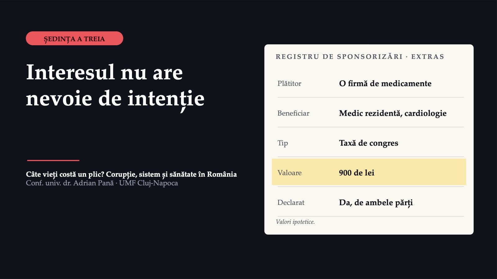
1 / 50Interesul nu are nevoie de intenție. Astăzi pornim de la un rând dintr-un registru de sponsorizări și ajungem la articolele retrase care continuă să fie citate.
Ce am schimbat după răspunsurile voastre
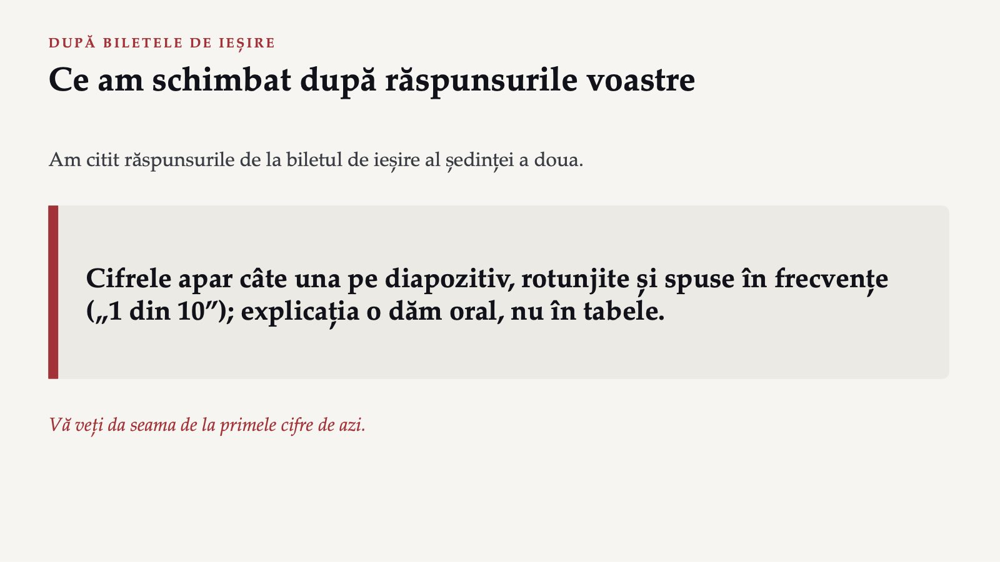
2 / 50Am citit răspunsurile de la biletul de ieșire al ședinței a doua. Am schimbat un lucru: cifrele apar câte una pe diapozitiv, rotunjite și spuse în frecvențe, iar explicația o dăm oral, nu în tabele.
Trei povești în două ore
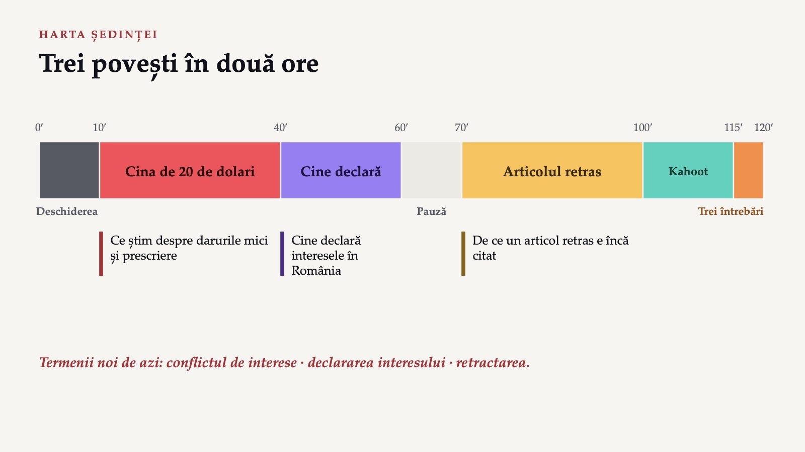
3 / 50Trei povești: cina de 20 de dolari, cine declară interesele în România și articolul retras. Jumătate din timp lucrați voi: votați pe telefon, discutați cu colegul de bancă și verificați chiar voi un articol. Iar înainte de câteva cifre, vă rog să ghiciți.
Un rând de 900 de lei
 4 / 50
4 / 50Valori ipotetice. Într-un registru public de sponsorizări apare un rând: o firmă care produce medicamente a plătit taxa de înscriere la un congres național, în valoare de 900 de lei, pentru o rezidentă de cardiologie. Firma a declarat plata la termen. Rezidenta a declarat-o și ea. Congresul a avut loc, rezidenta a participat la toate sesiunile, iar firma nu i-a cerut nimic în schimb.
Nimeni nu a greșit nimic.
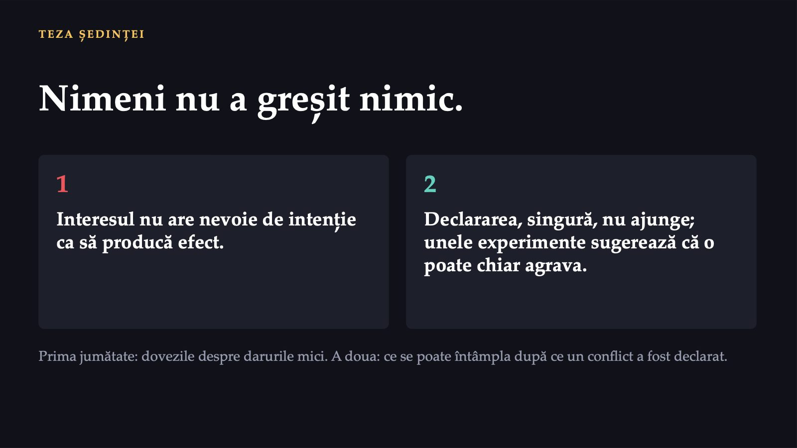
5 / 50Nimeni nu a greșit nimic. Firma și rezidenta au respectat regulile de declarare, iar congresul a fost unul științific. Teza ședinței: interesul nu are nevoie de intenție ca să producă efect, iar declararea, singură, nu ajunge; unele experimente sugerează că poate chiar înrăutăți lucrurile. Nimeni nu poate spune „eu nu fac așa ceva”, pentru că reacția la un dar este în mare parte inconștientă.
Rezidenta din registru are un conflict de interese?
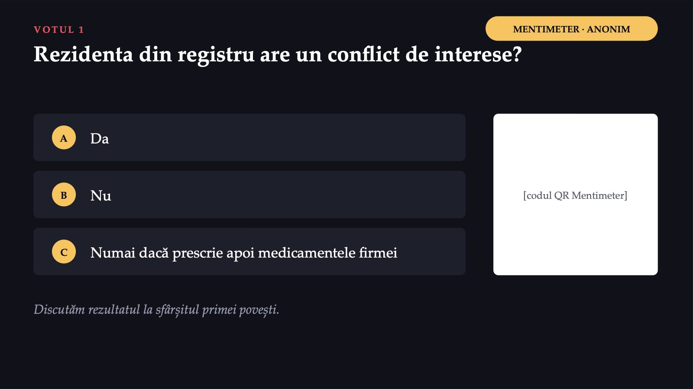
6 / 50Votați anonim, pe telefon: rezidenta din registru are un conflict de interese? Rezultatul îl discutăm la sfârșitul primei povești.
Un pix, o cafea, o cină
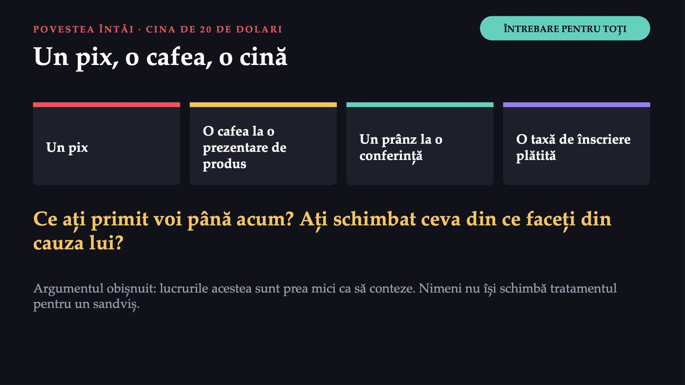
7 / 50Aproape fiecare medic primește, la un moment dat, ceva de la o firmă: un pix, o cafea la o prezentare de produs, un prânz la o conferință, o taxă de înscriere plătită. Argumentul obișnuit este că lucrurile acestea sunt prea mici ca să conteze. Ce ați primit voi până acum?
Reciprocitatea acționează fără să o observăm
![CUM ACȚIONEAZĂ UN DAR MIC Reciprocitatea acționează fără să o observăm ARGUMENTUL „PREA MIC CA SĂ CONTEZE” Joel Lexchin arată că acest argument pornește de la o premisă falsă: ideea că un medic ar alege conștient să se lase influențat. ÎN REALITATE A răspunde unui dar cu o favoare este un gest în mare parte inconștient. Reciprocitatea: regula socială după care întoarcem un serviciu primit, de cele mai multe ori fără să ne dăm seama. Sursa: Lexchin, sinteză despre conflictele de interese ale medicilor, 2026 (registru A700).](diapozitive/C03/008.jpg) 8 / 50
8 / 50Într-o sinteză publicată în 2026, Joel Lexchin arată că argumentul „prea mic ca să conteze” pornește de la o premisă falsă: ideea că medicii ar alege conștient să se lase influențați. În realitate, scrie el, a răspunde unui dar cu o favoare este un gest în mare parte inconștient. Mecanismul se numește reciprocitate: întoarcem un serviciu primit, de cele mai multe ori fără să ne dăm seama.
În câte dintre cele 4 clase credeți că au prescris mai des medicamentul promovat?
 9 / 50
9 / 50Ghiciți înainte de a afla rezultatul. Un studiu american a urmărit medici care primiseră de la firme mese de cel mult 20 de dolari și a comparat ce au prescris apoi, în patru clase de medicamente folosite foarte des. În câte dintre cele patru clase credeți că au prescris mai des medicamentul promovat? Ridicați mâna la varianta voastră.
4 din 4
 10 / 50
10 / 50Lexchin citează un studiu american care a urmărit medicii care primiseră de la firme mese în valoare de cel mult 20 de dolari. Studiul a privit patru clase de medicamente folosite foarte des. În toate cele patru clase, medicii care primiseră o masă au prescris mai des medicamentul promovat decât alternativele din aceeași clasă.
„Medicii, cumpărați cu o cină de 20 de dolari”
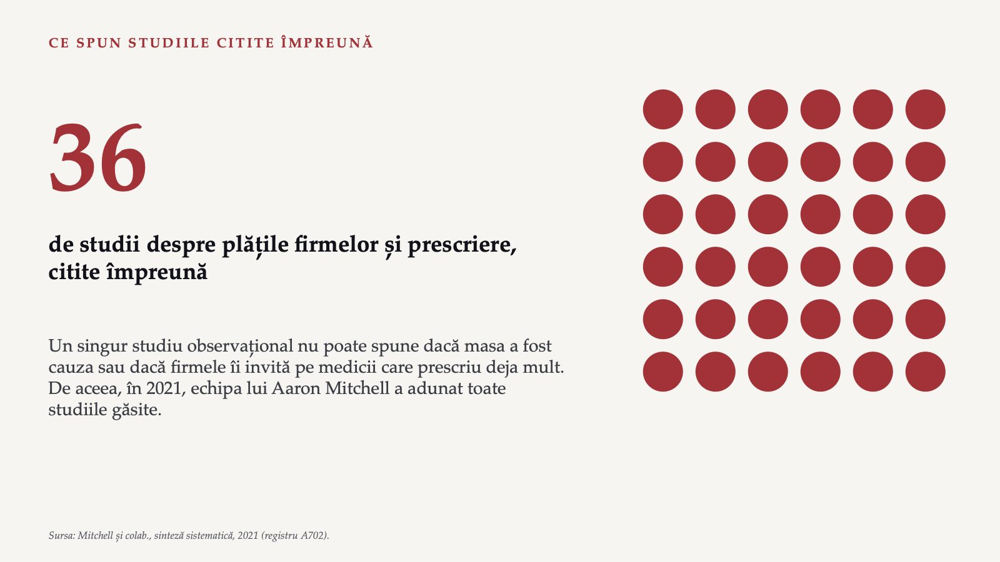
11 / 50Imaginați-vă un titlu de știre: „Medicii, cumpărați cu o cină de 20 de dolari”. Ați crede acest titlu? Votați, apoi discutați un minut cu colegul: ce întrebare i-ați pune autorului știrii?
36
 12 / 50
12 / 50Titlul spune mai mult decât studiul. Studiul a găsit o asociere, nu a arătat că masa a fost cauza. Firmele pot alege să invite tocmai medicii care prescriu deja mult. Ca să ne apropiem de un răspuns, avem nevoie de mai multe studii, citite împreună. În 2021, o echipă condusă de Aaron Mitchell a făcut o sinteză sistematică: a căutat, după reguli stabilite dinainte, toate studiile pe această temă. A găsit 36 de studii, cu 101 analize în total.
5 din 6
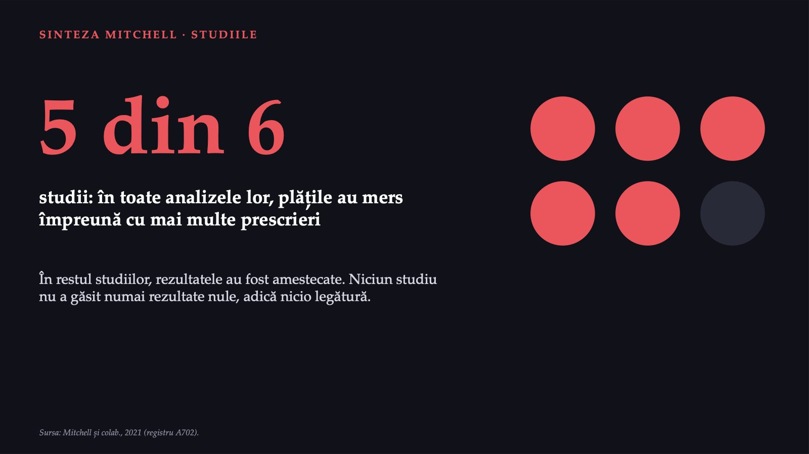
13 / 50În 5 din 6 studii, plățile au mers împreună cu mai multe prescrieri în toate analizele. În celelalte studii, rezultatele au fost amestecate, și niciun studiu nu a găsit numai rezultate nule, adică nicio legătură.
aproape 9 din 10
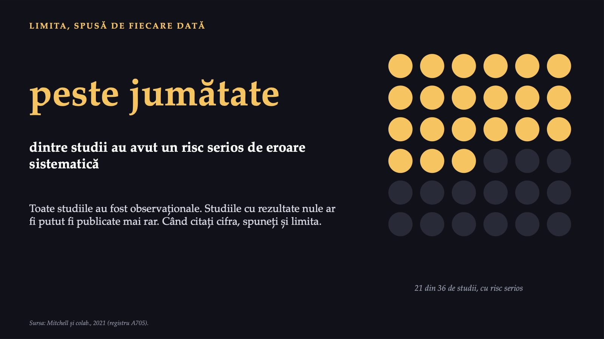
14 / 50Dacă numărăm analizele, nu studiile, aproape 9 din 10 au găsit aceeași legătură. Plățile au mers împreună cu mai multe prescrieri ale medicamentelor firmei care plătea, cu costuri mai mari ale prescrierii și cu mai multe medicamente de marcă.
peste jumătate
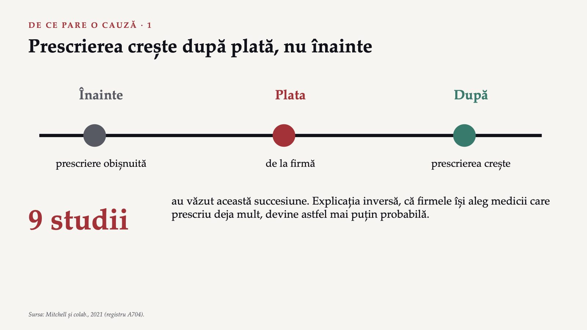
15 / 50Aceeași sinteză are și o limită pe care trebuie să o spuneți de fiecare dată când citați cifra: toate studiile au fost observaționale, iar mai mult de jumătate dintre ele au avut un risc serios de eroare sistematică. Autorii mai notează că studiile cu rezultate nule ar fi putut fi publicate mai rar.
9 studii
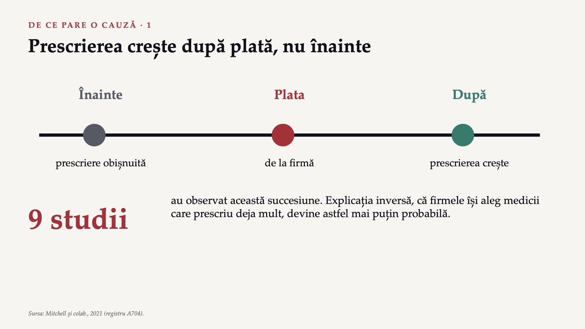
16 / 50Atunci de ce spun autorii că legătura pare cauzală? Pentru că două lucruri apar în multe studii. Primul: în 9 studii, prescrierea a crescut după plată, nu înainte. Dacă prescrierea crește după plată, explicația inversă devine mai puțin probabilă.
7 din 10
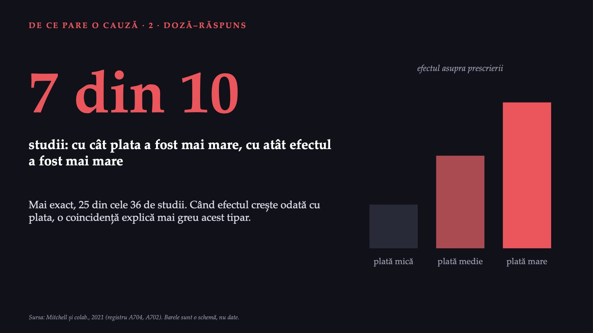
17 / 50Al doilea lucru: în 25 din cele 36 de studii, adică în aproximativ 7 din 10, cu cât plata a fost mai mare, cu atât efectul a fost mai mare. Aceasta este relația doză–răspuns.
sugerează
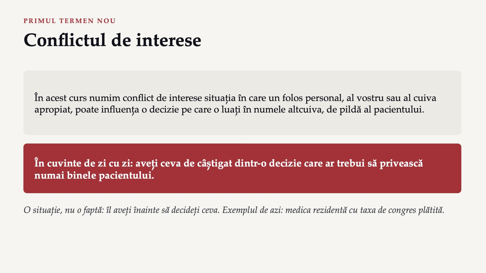
18 / 50Concluzia autorilor este formulată cu grijă: constatările privind succesiunea în timp și relația doză–răspuns „sugerează o relație cauzală”. Verbul ales de autori este „sugerează”, nu „demonstrează”, iar acesta este tonul potrivit și atunci când vorbiți voi despre aceste date.
Conflictul de interese
 19 / 50
19 / 50În acest curs numim conflict de interese situația în care un folos personal, al vostru sau al cuiva apropiat, poate influența o decizie pe care o luați în numele altcuiva, de pildă al pacientului. Conflictul de interese este o situație, nu o faptă: îl aveți înainte să decideți ceva, indiferent ce veți decide.
Trei medici, trei situații
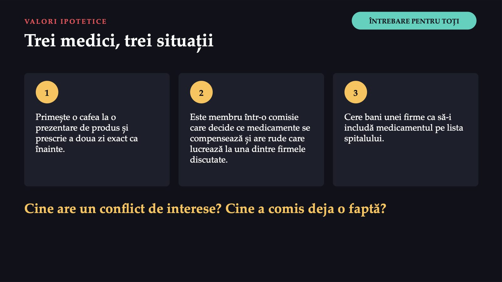
20 / 50Valori ipotetice. Primul medic primește o cafea la o prezentare de produs și prescrie a doua zi exact ca înainte. Al doilea este membru într-o comisie care decide ce medicamente se compensează și are rude care lucrează la una dintre firmele discutate. Al treilea cere bani unei firme ca să-i includă medicamentul pe lista spitalului. Cine are un conflict de interese? Cine a comis deja o faptă?
Răspunsul A: rezidenta are un conflict de interese
![RĂSPUNSUL LA VOTUL 1 Răspunsul A: rezidenta are un conflict de interese O situație, nu o faptă Nu a prescris încă nimic. Conflictul există înainte de orice decizie. Intenția nu schimbă situația Lipsa intenției nu face situația mai puțin reală; doar o face mai greu de văzut. Nu înseamnă corupție Dar conflictele de interese gestionate prost sunt printre factorii care favorizează corupția. Medicii 1 și 2 au un conflict de interese; niciunul nu a făcut ceva greșit. Medicul 3 a trecut de la situație la faptă: cere bani pentru o decizie. Sursa: registru A751 (conflictele gestionate prost, printre factorii corupției).](diapozitive/C03/021.jpg) 21 / 50
21 / 50Rezidenta are un conflict de interese, chiar dacă nu a prescris încă nimic. Nu este o acuzație, ci descrierea situației în care se află; situația îi cere doar să fie conștientă de ea. A avea un conflict de interese nu înseamnă a fi corupt; corupția este o faptă. Dar conflictele de interese gestionate prost sunt printre factorii care favorizează corupția. Primul și al doilea medic au un conflict de interese; al treilea a trecut de la situație la faptă.
Trei remedii, de la cel mai blând la cel mai strict
![ADEVĂRAT SAU FALS? CE SE POATE FACE Trei remedii, de la cel mai blând la cel mai strict Declararea Spuneți deschis că aveți interesul. Abținerea Nu participați la decizia în care interesul ar putea conta. Interdicția Interesul vă exclude de la decizie: de pildă, nu puteți fi membru al unei comisii a ministerului dacă, împreună cu familia, dețineți peste 5% dintr-o companie de medicamente. Adevărat sau fals? „Odată declarat, conflictul de interese a dispărut.” Ridicați mâna dacă e adevărat. Surse: Ordinul ministrului sănătății nr. 2396/2023; registru A748, A750, A712.](diapozitive/C03/022.jpg) 22 / 50
22 / 50Există trei remedii, de la cel mai blând la cel mai strict: declararea, abținerea și interdicția. Ordinul ministrului sănătății din 2023 despre comisiile de specialitate le folosește pe toate trei. Adevărat sau fals: odată declarat, conflictul de interese a dispărut? Fals. Declararea îl face vizibil, dar nu îl înlătură; transparența este considerată o condiție necesară, dar nu suficientă. Iar singurele măsuri despre care s-a arătat că reduc conflictele de interese sunt regulile impuse prin lege care interzic sau limitează darurile către medici și contactul cu firmele încă din facultate.
Trei întrebări înainte să primiți ceva
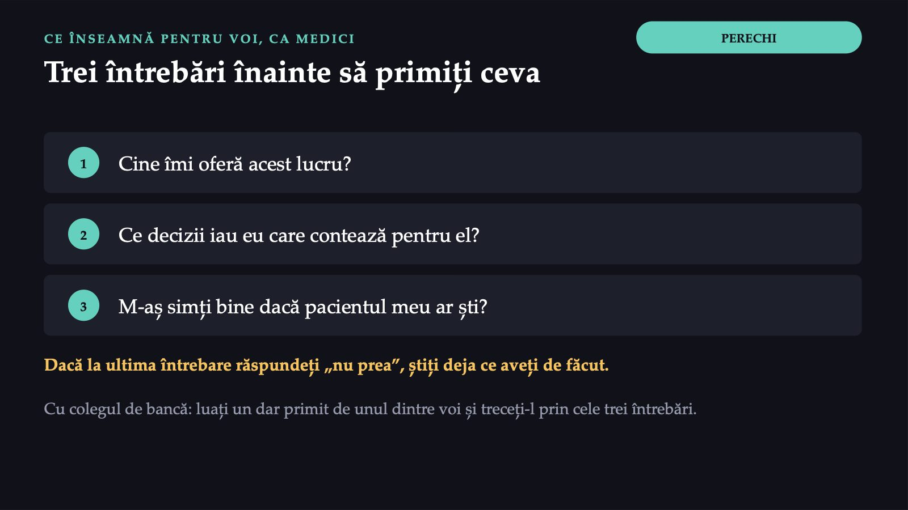
23 / 50Trei întrebări simple, de pus înainte să primiți ceva. Cine îmi oferă acest lucru? Ce decizii iau eu care contează pentru el? M-aș simți bine dacă pacientul meu ar ști? Nu vă cerem să refuzați orice; vă cerem să nu vă considerați imuni.
Într-un spital de stat, cine credeți că este obligat de această lege să își declare interesele?
 24 / 50
24 / 50În România, declarațiile de avere și de interese sunt reglementate de Legea nr. 176/2010 privind integritatea în exercitarea funcțiilor și demnităților publice. Într-un spital de stat, cine credeți că este obligat de această lege să își declare interesele: managerul, directorul medical, medicul de secție? Ridicați mâna la varianta voastră.
Cine își declară interesele după Legea nr. 176/2010
![RĂSPUNSUL · LEGEA NR. 176/2010 Cine își declară interesele după Legea nr. 176/2010 DECLARĂ Funcțiile de conducere și de control din unitățile sanitare de stat: managerul, directorul medical. NU DECLARĂ DUPĂ ACEASTĂ LEGE Medicul de secție fără funcție de conducere, chiar dacă prescrie zilnic medicamente scumpe. Unde le găsiți: pe pagina de internet a instituției sau la avizier, afișate în cel mult 30 de zile de la primire. Ce riscă cine este găsit în conflict de interese: timp de 3 ani nu mai poate ocupa funcțiile la care se referă legea, cu excepția celor electorale. Sursa: Legea nr. 176/2010 (registru A707, A745, A744).](diapozitive/C03/025.jpg) 25 / 50
25 / 50În sistemul de sănătate, Legea nr. 176/2010 îi obligă pe cei cu funcții de conducere și de control din unitățile de stat, deci pe manager și pe directorul medical. În sistemul de sănătate, legea îi obligă pe cei cu funcții de conducere și de control din unitățile de stat. Un medic de pe secție nu le depune în temeiul acestei legi. Instituția afișează declarațiile pe pagina ei de internet sau la avizier, în cel mult 30 de zile de la primire. Cine este găsit în conflict de interese nu mai poate ocupa, timp de 3 ani, o funcție dintre cele la care se referă legea, cu excepția celor electorale.
Membrii comisiilor dau avize pe care se sprijină politica de sănătate, inclusiv lista medicamentelor compensate.
![COMISIILE DE SPECIALITATE ALE MINISTERULUI SĂNĂTĂȚII ORDINUL MINISTRULUI SĂNĂTĂȚII NR. 2396/2023 · EXTRAS PARAFRAZAT Declarația de interese: în 30 de zile de la numire, actualizată în 30 de zile de la orice schimbare. Unde ajunge: se depune și se arhivează la minister. Abținerea: cine a participat în ultimul an la studii clinice cu medicamente discutate în comisie și orice membru la care s-a identificat un conflict de interese completează o declarație de abținere și se retrage de la vot. Membrii comisiilor dau avize pe care se sprijină politica de sănătate, inclusiv lista medicamentelor compensate. Aici deciziile medicilor contează mai mult decât la patul pacientului. Sursa: Ordinul ministrului sănătății nr. 2396/2023, forma actualizată (registru A710, A711, A743).](diapozitive/C03/026.jpg) 26 / 50
26 / 50Există un loc în care deciziile medicilor contează mult mai mult decât la patul pacientului: comisiile de specialitate ale Ministerului Sănătății. Ordinul în vigoare, din 2023, cere ca fiecare membru să depună o declarație de interese în 30 de zile de la numire și să o actualizeze în 30 de zile de la orice schimbare. Declarațiile se depun și se arhivează la minister. Membrul care a participat, în ultimul an, la studii clinice cu medicamente discutate în comisie, precum și orice membru la care s-a identificat un conflict de interese, completează o declarație de abținere și se retrage de la vot.
5%
![COMISIILE DE SPECIALITATE · CINE POATE FI MEMBRU 5% pragul peste care un specialist nu poate fi membru al unei comisii de specialitate a ministerului Ordinul ministrului sănătății nr. 2396/2023, art. 5: membrii comisiilor sunt specialiști care a) nu au funcții, plătite sau nu, în companiile care produc, distribuie sau dețin autorizații de punere pe piață pentru medicamente, dispozitive, aparatură sau echipamente medicale; b) nu au în asemenea companii acțiuni sau părți sociale care, împreună cu ale soțului sau soției și ale rudelor de gradul I, depășesc 5% din capitalul societății, oricum ar fi fost dobândite. Cine nu mai îndeplinește aceste condiții are obligația să informeze ministerul. 100 de părți din capitalul unei companii Sursa: Ordinul ministrului sănătății nr. 2396/2023, art. 5 alin. (1) lit. a) și b), alin. (2) (registru A712).](diapozitive/C03/027.jpg) 27 / 50
27 / 50Ordinul ministrului sănătății nr. 2396/2023 spune cine poate fi membru al unei comisii de specialitate. Membrii trebuie să fie specialiști care nu au funcții, plătite sau nu, în companiile care produc, distribuie sau dețin autorizații de punere pe piață pentru medicamente, dispozitive, aparatură sau echipamente medicale. Și nu pot avea în asemenea companii acțiuni sau părți sociale care, împreună cu ale soțului sau soției și ale rudelor de gradul întâi, depășesc 5% din capitalul societății, indiferent cum au fost dobândite. Cine nu mai îndeplinește aceste condiții are obligația să informeze ministerul. Este deci o condiție ca să puteți fi membru al comisiei. În textul ordinului nu am găsit o prevedere care să ceară publicarea declarațiilor de interese.
Declarațiile de interese ale membrilor comisiilor de specialitate ar trebui…
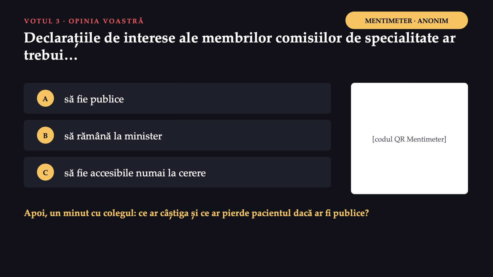
28 / 50Votați anonim: declarațiile de interese ale membrilor comisiilor de specialitate ar trebui să fie publice, să rămână la minister sau să fie accesibile numai la cerere? Apoi, un minut cu colegul: ce ar câștiga și ce ar pierde pacientul dacă ar fi publice?
Declararea: necesară, dar nu ajunge
![REGISTRUL DE SPONSORIZĂRI · AL DOILEA TERMEN NOU Declararea: necesară, dar nu ajunge LEGEA SĂNĂTĂȚII, NR. 95/2006, ART. 814 Legea îi obligă pe producătorii și distribuitorii de medicamente și de dispozitive medicale să declare sponsorizările și celelalte cheltuieli făcute pentru medici. Medicul sponsorizat declară și el. Termenul: 31 martie, pentru anul anterior. Registrul arată plata, nu și dacă plata a schimbat ceva. DECLARAREA INTERESULUI „Vă spun de la început că firma X mi-a plătit congresul.” Primul și cel mai blând remediu al conflictului de interese: nu îl înlătură, doar îl face vizibil. Surse: Legea nr. 95/2006, ordinul din 2015 (registru A716, A718).](diapozitive/C03/029.jpg) 29 / 50
29 / 50Legea sănătății, Legea nr. 95/2006, la articolul 814, îi obligă pe producătorii și distribuitorii de medicamente și de dispozitive medicale să declare sponsorizările făcute pentru medici; medicul sponsorizat declară și el. Declarațiile pentru anul trecut se depun până la 31 martie. Registrul arată că a existat o plată; nu arată dacă plata a schimbat ceva. Declararea interesului este primul și cel mai blând remediu: nu înlătură conflictul, doar îl face vizibil.
Ce vă poate spune un registru și ce nu
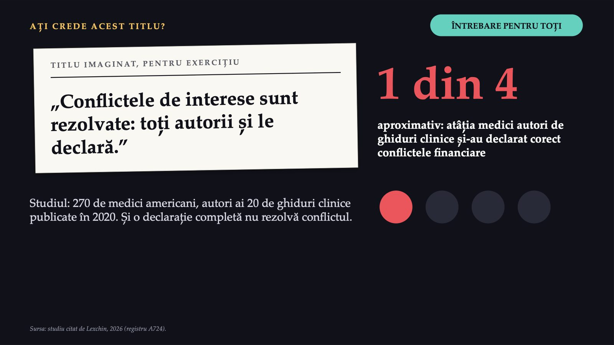
30 / 50Lucrați în perechi. Imaginați-vă că aveți în față un registru public de sponsorizări. Scrieți trei întrebări despre sistem la care registrul vă poate răspunde și o întrebare la care nu vă poate răspunde. Nu căutați persoane și nu numiți pe nimeni: analizăm structura, nu oamenii.
Ce se poate întâmpla după declarare
![CÂND DECLARAREA ÎNRĂUTĂȚEȘTE LUCRURILE Ce se poate întâmpla după declarare Exagerarea calculată Vorbitorul știe că va fi crezut mai puțin și compensează, exagerând beneficiile unui medicament nou. Permisiunea morală După gestul corect al declarării, se simte îndreptățit la unul mai puțin corect, ca și cum și-ar fi „plătit” deja datoria. Publicul Îl socotește „cinstit” pe cel care declară și uită că ce spune acesta poate fi părtinitor. Pe cel care își declară interesele ascultați-l cu aceeași atenție critică pe care o acordați oricui. Sursa: Lexchin, 2026 (registru A722, A723).](diapozitive/C03/031.jpg) 31 / 50
31 / 50Sinteza lui Lexchin descrie două mecanisme prin care declararea poate face lucrurile mai rele. Prima este exagerarea calculată: un vorbitor care știe că publicul îl va crede mai puțin poate compensa, exagerând beneficiile unui medicament nou. A doua este permisiunea morală: după un gest corect, cum este declararea, oamenii se simt mai îndreptățiți să facă unul mai puțin corect. Iar publicul îl poate considera pe vorbitor un om cinstit și poate uita că ce spune poate fi părtinitor.
Câți dintre ei credeți că și-au declarat corect conflictele de interese financiare?
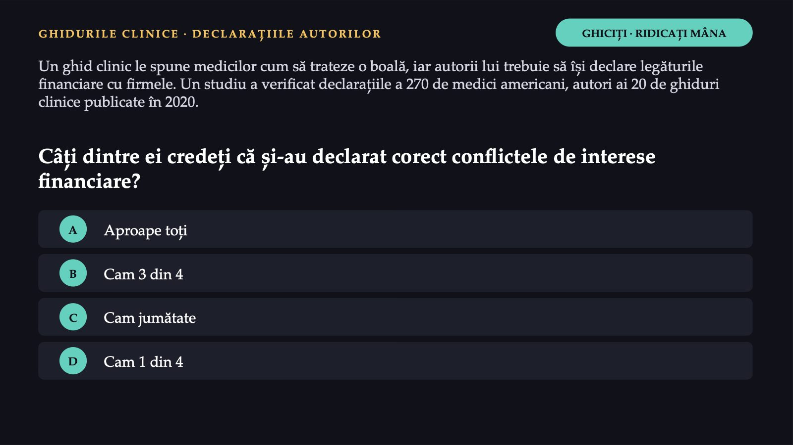
32 / 50Ghiciți înainte de a afla rezultatul. Un studiu a verificat declarațiile a 270 de medici americani, autori ai 20 de ghiduri clinice publicate în 2020. Câți dintre ei credeți că și-au declarat corect conflictele de interese financiare? Ridicați mâna la varianta voastră.
1 din 4
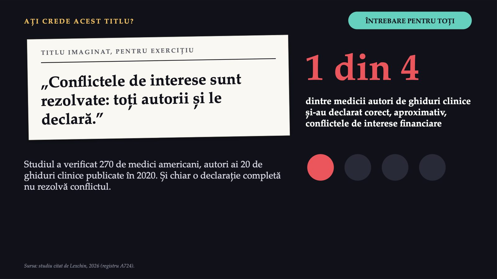
33 / 50„Conflictele de interese sunt rezolvate: toți autorii și le declară.” Ați crede acest titlu? Două probleme. Chiar și o declarație completă nu rezolvă conflictul. Iar declarațiile sunt adesea incomplete: dintre 270 de medici americani, autori ai 20 de ghiduri clinice publicate în 2020, numai aproximativ 1 din 4 și-au declarat corect conflictele de interese financiare.
Pauză
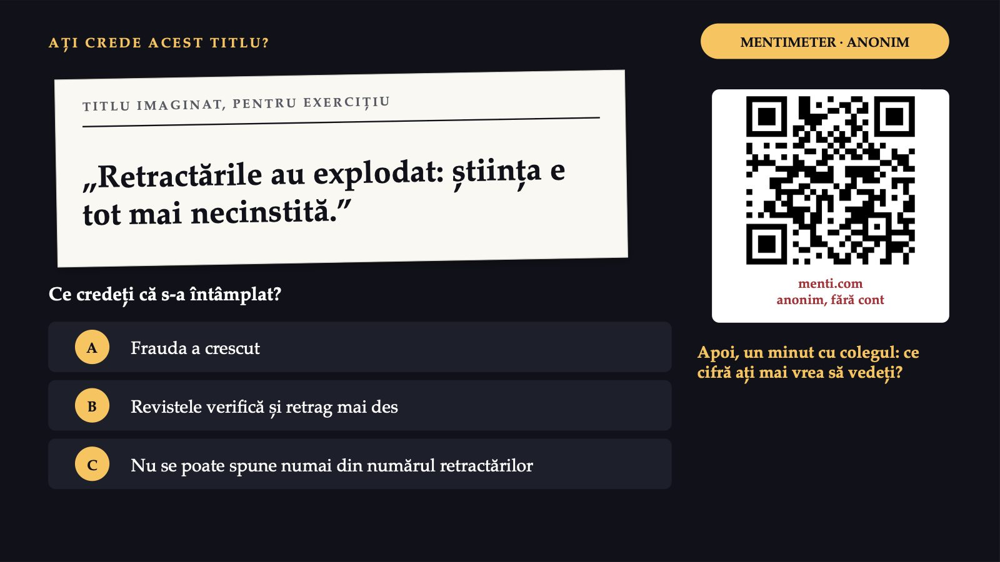
34 / 50Ne revedem în zece minute, cu povestea a treia: articolul retras.
Un articol greșit, mii de decizii
![POVESTEA A TREIA · ARTICOLUL RETRAS Un articol greșit, mii de decizii Până acum am vorbit despre un medic și o decizie. Acum urcăm la literatura științifică pe care se sprijină deciziile tuturor. Dacă un ghid clinic se sprijină pe un studiu fals, fiecare medic care îl urmează este indus în eroare fără să știe. AL TREILEA TERMEN NOU · RETRACTAREA Revista retrage oficial un articol și avertizează cititorii asupra unor probleme grave. În cuvinte de zi cu zi: „nu mai garantăm pentru acest articol”. Articolul iese din literatura care poate fi citată, dar nu dispare: anunțul se leagă de el și spune motivul. Valabil Corectat Retras Expresie de îngrijorare Sursa: definiția retractării după ghidul COPE, Comitetul pentru Etica Publicării (registru A753, A752).](diapozitive/C03/035.jpg) 35 / 50
35 / 50Mutăm privirea mai sus, la literatura științifică pe care se sprijină deciziile tuturor medicilor. Aici, un singur articol greșit poate influența mii de decizii. Retractarea este retragerea oficială a unui articol publicat, anunțată de revistă, care avertizează cititorii asupra unor probleme grave. Ea scoate articolul din literatura care poate fi citată, dar nu oprește răspândirea lui. Un articol poate fi valabil, corectat sau retras; unele reviste publică și o expresie de îngrijorare.
67 663
 36 / 50
36 / 50Retraction Watch este o bază de date publică despre retractări; datele ei se pot descărca gratuit prin Crossref. Am descărcat-o pe 11.10.2026. Ea conține 73 100 de înregistrări, dintre care 67 663 sunt retractări.
„Retractările au explodat: știința e tot mai necinstită.”
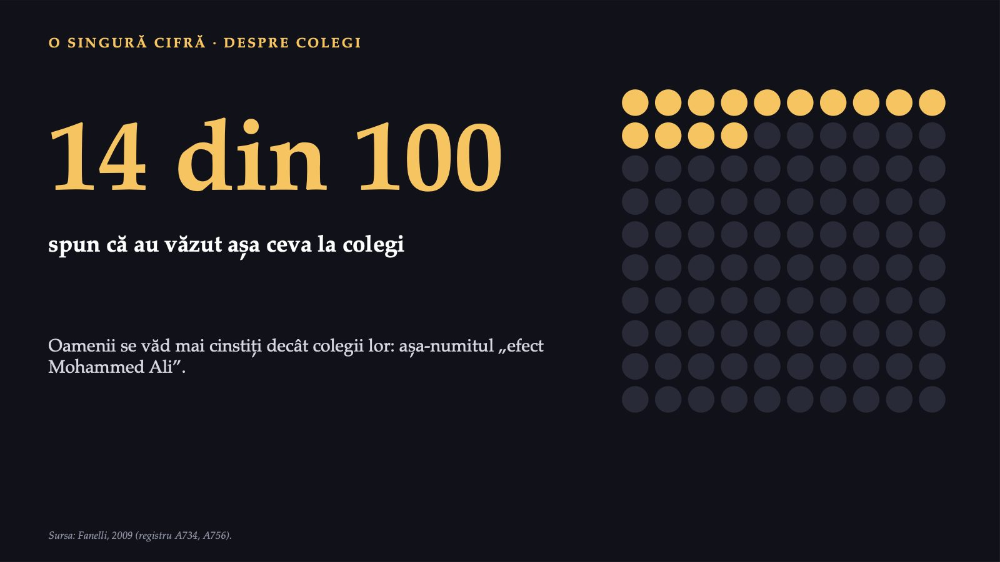
37 / 50„Retractările au explodat: știința e tot mai necinstită.” Ați crede acest titlu? Retractările au crescut mult în ultimele decenii. Ce credeți că s-a întâmplat? Votați, apoi discutați un minut cu colegul: ce cifră ați mai vrea să vedeți?
Retractările cresc. Corecturile, nu.
![DUPĂ VOT Retractările cresc. Corecturile, nu. retractări: aproximativ +20% pe an corecturi: fără o creștere semnificativă din 1980 încoace · schemă, nu date Fanelli (2013) a analizat 2 294 de retractări. Raționamentul lui: dacă cercetătorii ar fi tot mai necinstiți, ar crește și corecturile. Corecturile nu au crescut; a crescut mai ales supravegherea, nu neapărat frauda. O analiză din 2025: supraveghere mai atentă, dar și probleme de integritate care continuă. Pentru orice cifră care crește: crește fenomenul sau îl vedem mai bine? Surse: Fanelli, 2013 (registru A731, A732); analiza din 2025 (registru A755).](diapozitive/C03/038.jpg) 38 / 50
38 / 50Un studiu publicat în 2013 de Daniele Fanelli a analizat 2 294 de retractări și a comparat creșterea lor cu creșterea corecturilor. Din 1980, frecvența retractărilor a crescut cu aproximativ 20% pe an, în timp ce frecvența corecturilor nu a crescut semnificativ. Ce a crescut este mai ales înclinația revistelor de a retrage articole, adică supravegherea, nu neapărat frauda. O analiză din 2025 ajunge la o concluzie apropiată, dar mai nuanțată: supraveghere mai atentă, dar și probleme de integritate care continuă.
2 din 100
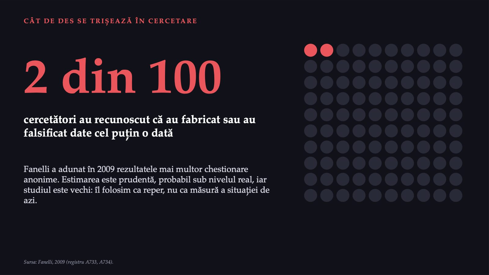
39 / 50Nu putem afla direct cât de des falsifică cercetătorii datele, pentru că frauda se ascunde. Fanelli a încercat, în 2009, să o estimeze din chestionare anonime. În medie, aproximativ 2 din 100 de cercetători au recunoscut că au fabricat sau au falsificat date cel puțin o dată. Autorul consideră estimarea una prudentă, iar studiul e vechi: îl folosim ca reper.
14 din 100
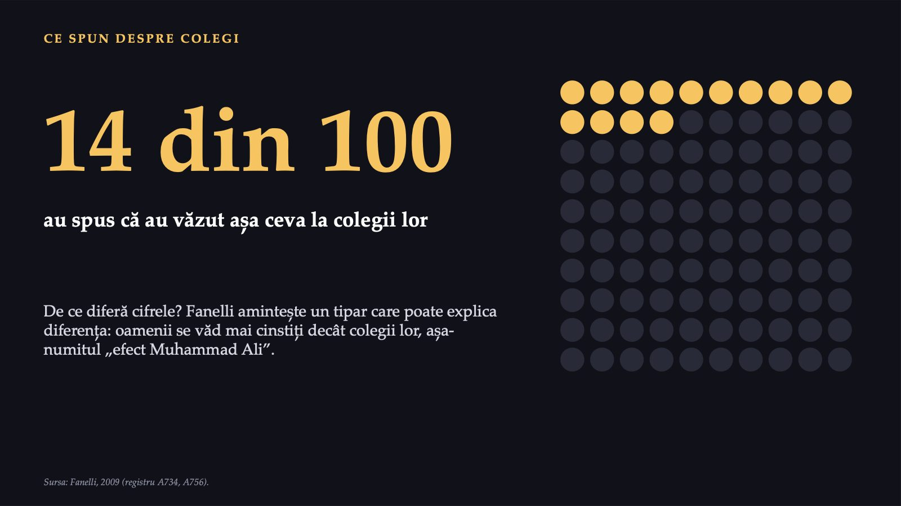
40 / 50Când au fost întrebați despre colegi, aproximativ 14 din 100 au spus că au văzut așa ceva. De ce diferă cifrele? Fanelli amintește un tipar care poate explica diferența: oamenii se văd mai cinstiți decât colegii lor, așa-numitul „efect Muhammad Ali”.
Din citările scrise după retragere, câte credeți că spun că articolul fusese retras?
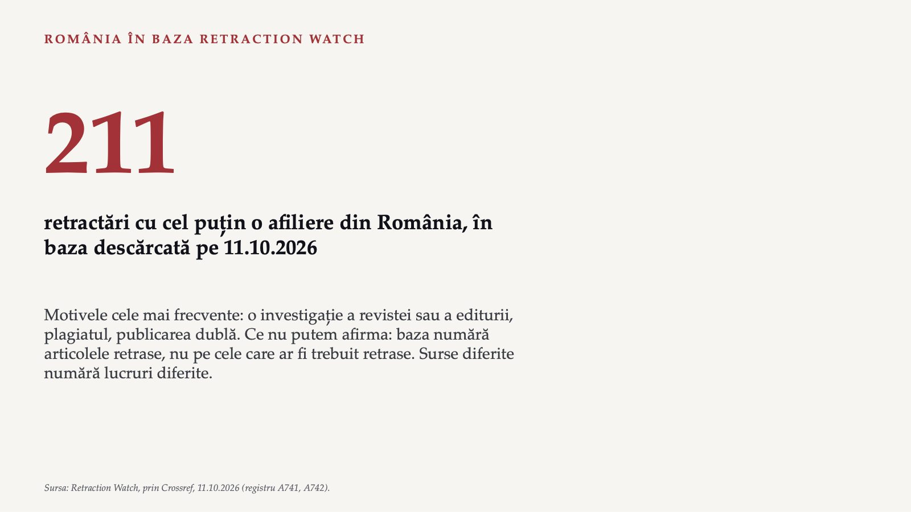
41 / 50Ghiciți înainte de a afla rezultatul. A cita un articol înseamnă a-l folosi ca sprijin într-o lucrare nouă. Cine citează un articol după ce a fost retras ar trebui măcar să spună că a fost retras. Din citările scrise după retragere, câte credeți că spun acest lucru? Ridicați mâna la varianta voastră.
1 din 20
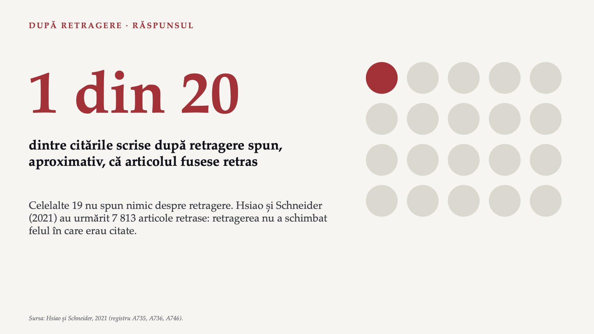
42 / 50Un articol retras ar trebui să nu mai fie folosit ca dovadă. În realitate, el continuă să fie citat. Un studiu publicat în 2021 de Tzu-Kun Hsiao și Jodi Schneider a urmărit 7 813 articole retrase. Din citările de după retragere, numai aproximativ 1 din 20 spunea că articolul fusese retras. Retragerea nu a schimbat felul în care erau citate aceste articole.
9 din 10
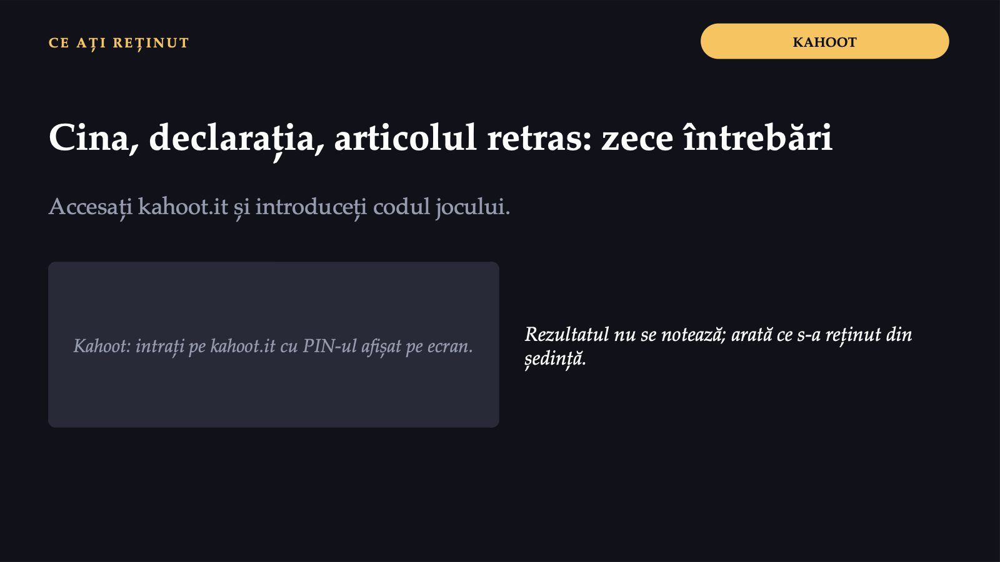
43 / 50Un studiu din 2019 al lui Daniel Hamilton a urmărit 47 de studii retrase din literatura de radioterapie oncologică și cele 358 de lucrări care le citau după retragere și au putut fi examinate. Aproximativ 9 din 10 dintre aceste lucrări citau articolul retras ca pe unul valabil. Printre ele erau trei ghiduri clinice. Fenomenul a fost studiat și la noi, de o echipă de la Universitatea de Medicină și Farmacie „Iuliu Hațieganu” din Cluj-Napoca.
Cum aflați dacă un articol a fost retras
![VERIFICAȚI CHIAR VOI · PAȘII ÎN PUBMED Cum aflați dacă un articol a fost retras 1 Deschideți pubmed.ncbi.nlm.nih.gov, pe telefon sau pe calculator. 2 Lipiți în caseta de căutare titlul articolului. Merge și PMID-ul (numărul lui în PubMed) sau DOI-ul (codul lui unic, de pe prima pagină). 3 Deschideți înregistrarea. Sub titlu căutați trimiterea „Retraction in”; la „Publication types”, eticheta „Retracted Publication”. 4 Nu apare nimic? Căutați titlul sau DOI-ul și în baza Retraction Watch, la retractiondatabase.org: acolo vedeți tipul notei (retractare, corectură sau expresie de îngrijorare). 5 Pentru o temă întreagă: adăugați la căutarea din PubMed AND retracted publication[pt] și vedeți numai articolele retrase. Etichetele sunt cele din înregistrările PubMed, în limba engleză.](diapozitive/C03/044.jpg) 44 / 50
44 / 50Cum verificați concret dacă un articol a fost retras. Deschideți pubmed.ncbi.nlm.nih.gov. Lipiți în caseta de căutare titlul articolului; merge și PMID-ul, adică numărul articolului în PubMed, sau DOI-ul, codul lui unic. Deschideți înregistrarea și uitați-vă sub titlu: dacă articolul a fost retras, apare trimiterea „Retraction in”, care duce la nota de retractare. La „Publication types” apare eticheta „Retracted Publication”. Dacă nu apare nimic, căutați titlul sau DOI-ul și în baza Retraction Watch, la retractiondatabase.org; acolo vedeți și tipul notei: retractare, corectură sau expresie de îngrijorare. Și un pas în plus: dacă adăugați la o căutare în PubMed „AND retracted publication[pt]”, vedeți numai articolele retrase pe tema respectivă.
Wakefield și colab., The Lancet, 1998
![UN EXEMPLU REAL · CE VEDEȚI ÎN PUBMED Wakefield și colab., The Lancet, 1998 pubmed.ncbi.nlm.nih.gov/9500320 Ileal-lymphoid-nodular hyperplasia, non-specific colitis, and pervasive developmental disorder in children Wakefield AJ, et al. Lancet. 1998. PMID: 9500320 Retraction in: Lancet. 2010 Feb 6;375(9713):445 Publication types Retracted Publication Schemă după înregistrarea PubMed; pe ecran, elementele pot fi așezate altfel. CE ÎNSEAMNĂ „Retraction in”: revista a publicat o notă de retractare; trimiterea duce la ea (PMID 20137807). „Retracted Publication”: articolul este marcat oficial ca retras. Articolul a legat, după relatarea părinților, debutul tulburărilor de comportament de vaccinul ROR la 8 din 12 copii. În 2004, 10 dintre cei 13 autori au retras interpretarea („Retraction of an interpretation”); în 2010 a urmat nota care retrage articolul. Sursa: PubMed, înregistrările PMID 9500320, 15016483 și 20137807 (registru A762–A764). Consultate pe 15.10.2026.](diapozitive/C03/045.jpg) 45 / 50
45 / 50Să vedem un exemplu real. Articolul lui Wakefield și al colaboratorilor săi, publicat în The Lancet în 1998, a legat, după relatarea părinților, debutul tulburărilor de comportament de vaccinul ROR, împotriva rujeolei, oreionului și rubeolei, la 8 din 12 copii. Îi căutăm titlul în PubMed și deschidem înregistrarea, cu PMID 9500320. Sub titlu apare „Retraction in: Lancet. 2010 Feb 6;375(9713):445”: revista l-a retras în 2010, iar trimiterea duce la nota de retractare. La tipurile de publicație apare „Retracted Publication”. Încă din 2004, 10 dintre cei 13 autori retrăseseră interpretarea articolului.
Rândul vostru: a fost retras articolul?
![PERECHI · TELEFON · 4 MINUTE VERIFICAȚI CHIAR VOI Rândul vostru: a fost retras articolul? 1 Alegeți un articol pe care l-ați citat recent sau pe care îl citează un ghid folosit de voi. 2 Căutați-l în PubMed, ca în exemplul Wakefield: „Retraction in”, „Retracted Publication”. 3 Nu găsiți nimic? Verificați și în retractiondatabase.org: retractare, corectură sau îngrijorare? 4 Spuneți colegului ce ați găsit și cât timp v-a luat. De ce întâi PubMed Un studiu a verificat 150 de articole retrase: PubMed le marca pe toate ca retrase, dar pe paginile editurilor numai 88% dintre PDF-uri aveau marcajul. Un PDF descărcat mai demult nu arată retragerea. Sursa: registru A759.](diapozitive/C03/046.jpg) 46 / 50
46 / 50Acum e rândul vostru, în perechi, pe telefon. Alegeți un articol pe care l-ați citat recent sau pe care îl citează un ghid folosit de voi. Căutați-l în PubMed, ca în exemplul de adineauri, și uitați-vă dacă apar „Retraction in” sau „Retracted Publication”. Dacă nu găsiți nimic, verificați și în baza Retraction Watch. Spuneți colegului ce ați găsit și cât timp v-a luat. De ce întâi PubMed? Într-un studiu, PubMed a marcat ca retrase toate cele 150 de articole retrase verificate, iar pe paginile editurilor numai 88% dintre PDF-uri erau marcate. Un PDF descărcat mai demult nu arată retragerea.
211
 47 / 50
47 / 50În baza descărcată pe 11.10.2026 apar 211 retractări cu cel puțin o afiliere din România. Motivele cele mai frecvente sunt plagiatul, o investigație a revistei sau a editurii și publicarea dublă. Baza numără articolele retrase, nu articolele care ar fi trebuit retrase. O țară cu puține retractări poate avea fie cercetători mai cinstiți, fie reviste care verifică mai puțin. Înainte să comparați două cifre, întrebați-vă dacă numără același lucru.
Ce faceți diferit de mâine
![ÎN PRACTICĂ Ce faceți diferit de mâine 1 Înainte să primiți ceva de la o firmă: ce decizii iau eu care contează pentru ea, și m-aș simți bine dacă pacientul meu ar ști? 2 Declarați-vă interesele, dar nu vă opriți la declarare: când interesul e mare, abțineți-vă de la decizie. 3 Când un vorbitor își declară interesele, nu îl credeți mai mult pentru asta. 4 Înainte să citați un articol, verificați în PubMed, în două minute, dacă nu a fost retras. 5 La un titlu despre medici, firme sau fraude în știință: ați crede acest titlu?](diapozitive/C03/048.jpg) 48 / 50
48 / 50Ce faceți diferit de mâine. Înainte să primiți ceva de la o firmă, întrebați-vă ce decizii luați care contează pentru ea. Declarați-vă interesele, dar nu vă opriți la declarare. Nu credeți un vorbitor mai mult pentru că își declară interesele. Înainte să citați un articol, verificați în două minute, întâi în PubMed, dacă nu a fost retras. Și la orice titlu despre medici, firme sau fraude în știință, întrebați-vă: ați crede acest titlu?
Cina, declarația, articolul retras: zece întrebări
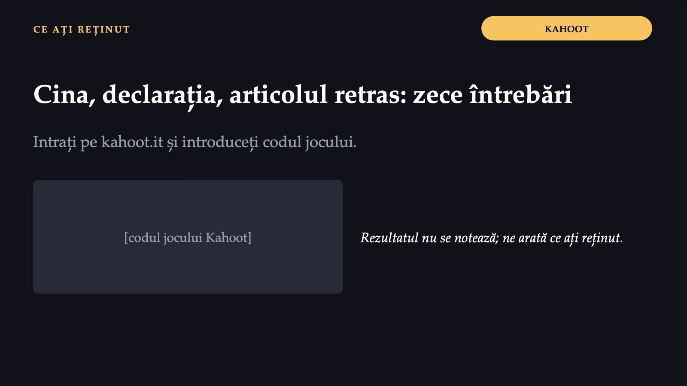
49 / 50Zece întrebări despre ce am discutat. Rezultatul nu se notează.
Trei întrebări pentru final
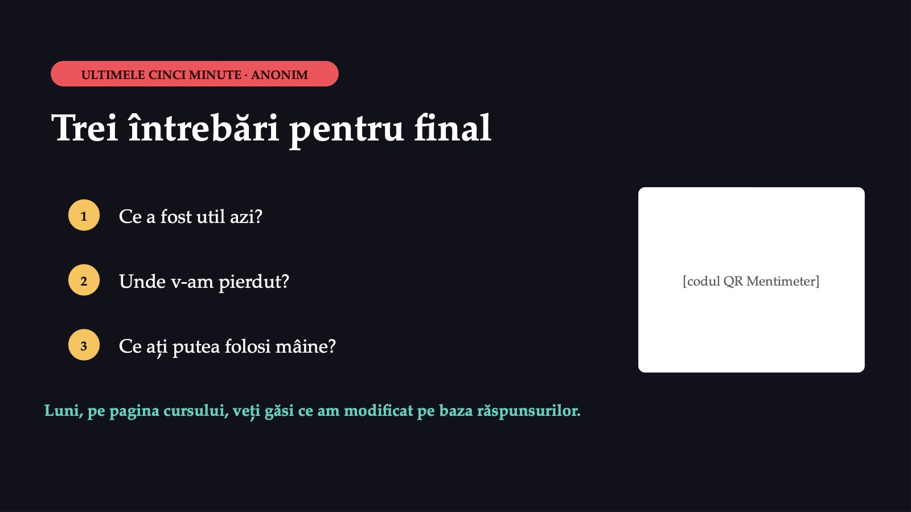
50 / 50Trei întrebări anonime: ce a fost util azi, unde v-am pierdut și ce ați putea folosi mâine. Luni, pe pagina cursului, veți găsi ce am modificat pe baza răspunsurilor.
Săgeți sau spațiu: navigare · O: vedere de ansamblu · N: notele prezentatorului · F: ecran complet · Esc: închidere